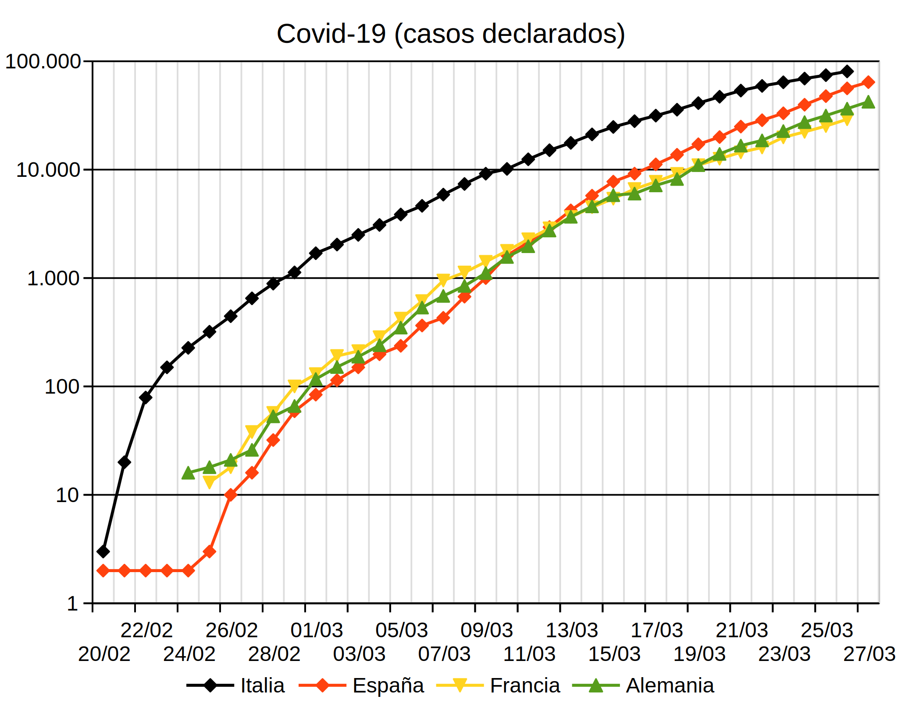
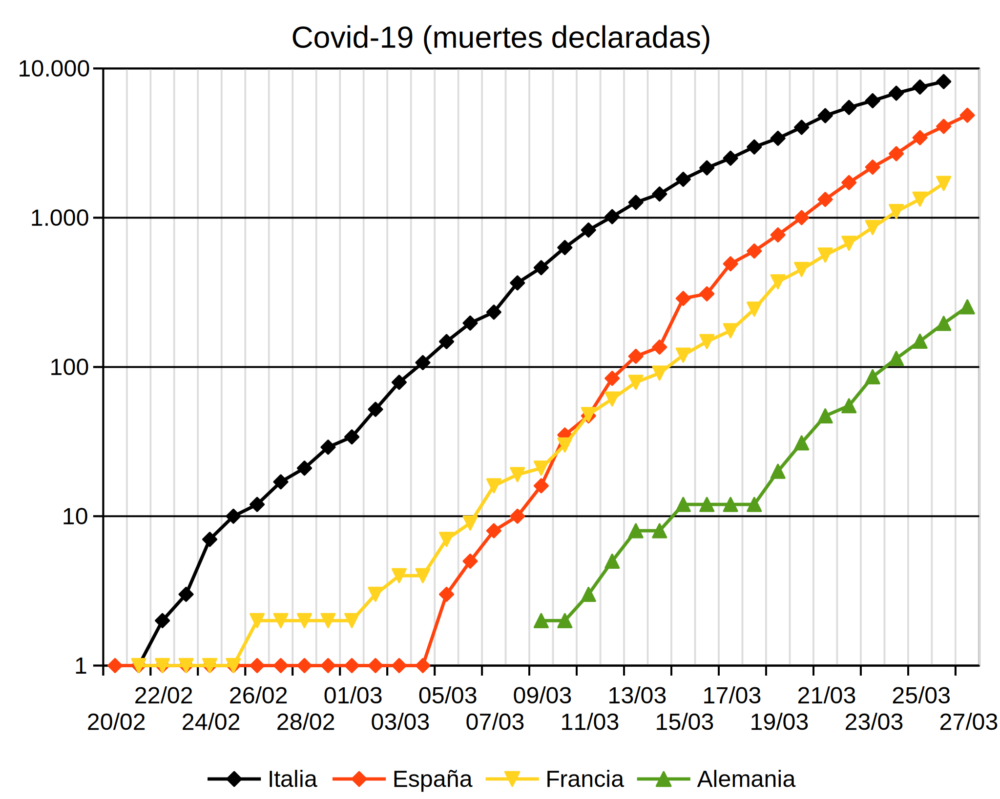
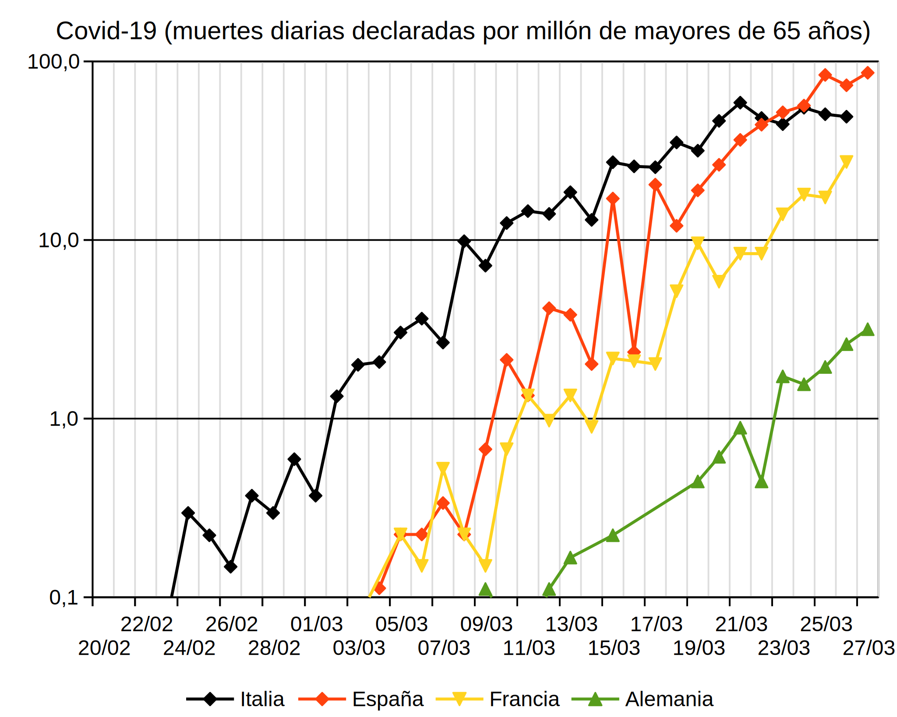
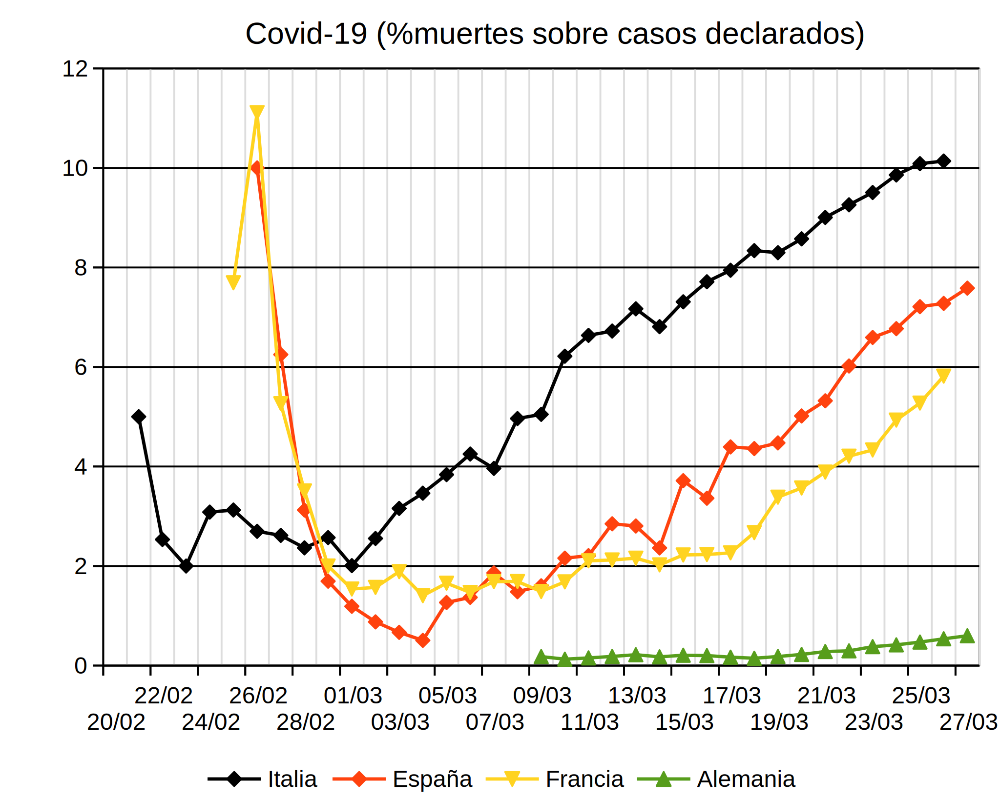
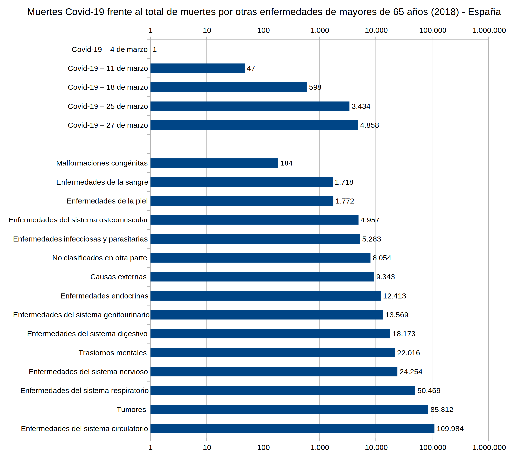

La lección Evolución del hardware muestra varios ejemplos de evolución exponencial "artificial", es decir, producida de forma intencionada (en ese caso por la industria informática) y que acaba inevitablemente llegando a sus límites físicos. En esta lección se muestra un ejemplo de evolución exponencial "natural", en el que esperamos que la intervención humana adelante su también inevitable final.
Se trata de la evolución de la epidemia del coronavirus Covid-19 que estamos sufriendo actualmente. Esta página no pretende ofrecer información ni sobre la enfermedad, ni sobre su tratamiento, ni predicciones sobre su evolución futura. Simplemente pretende mostrar los datos oficiales de una forma comprensible y analizable gracias a la representación logarítmica de los datos oficiales.
 España publica sus datos de una forma peculiar. El Ministerio de Sanidad publica unos datos a mediodía y a lo largo de la tarde las Comunidades Autónomas publican cada una por su lado sus propios datos. Para elaborar esta página se utilizan los datos publicados en Wikipedia a última hora de la tarde. El 16 de marzo han empezado a publicarse datos que cabría calificar de "extraños". Por ejemplo la Comunidad de Madrid declara no haber tenido muertes del 15 al 16 de marzo, algo sorprendente dado el número de muertes que se están produciendo en Madrid estos días. Aunque menos sorprendente porque su número de muertes estos días es inferior a Madrid, País Vasco y Comunidad Valencia también declaran no haber tenido muertes del 16 al 17 de marzo. Estas anomalías explican la mejoría brusca que se aprecía en la gráfica de muertos a partir del 16 de marzo, que no puede vincularse de ninguna manera con el comienzo de la cuarentena declarada el 15 de marzo. Esperemos que esta anomalía no sea la señal de manipulación o retención de datos, porque para tomar decisiones correctas tanto las autoridades como los ciudadanos necesitamos y tenemos derecho a conocer los datos reales.
España publica sus datos de una forma peculiar. El Ministerio de Sanidad publica unos datos a mediodía y a lo largo de la tarde las Comunidades Autónomas publican cada una por su lado sus propios datos. Para elaborar esta página se utilizan los datos publicados en Wikipedia a última hora de la tarde. El 16 de marzo han empezado a publicarse datos que cabría calificar de "extraños". Por ejemplo la Comunidad de Madrid declara no haber tenido muertes del 15 al 16 de marzo, algo sorprendente dado el número de muertes que se están produciendo en Madrid estos días. Aunque menos sorprendente porque su número de muertes estos días es inferior a Madrid, País Vasco y Comunidad Valencia también declaran no haber tenido muertes del 16 al 17 de marzo. Estas anomalías explican la mejoría brusca que se aprecía en la gráfica de muertos a partir del 16 de marzo, que no puede vincularse de ninguna manera con el comienzo de la cuarentena declarada el 15 de marzo. Esperemos que esta anomalía no sea la señal de manipulación o retención de datos, porque para tomar decisiones correctas tanto las autoridades como los ciudadanos necesitamos y tenemos derecho a conocer los datos reales.
La gráfica siguiente muestra los casos declarados de afectados por Covid-19 en Italia, España, Francia y Alemania en las últimas semanas:

La gráfica anterior no tiene en cuenta que cada país tiene un número de habitantes distinto, lo que distorsiona la comparación. Para corregir este problema, la gráfica siguiente muestra los casos declarados de afectados por Covid-19 en Italia, España, Francia y Alemania en las últimas semanas por cada millón de habitantes:

La gráfica siguiente muestra las muertes declaradas por Covid-19 en Italia, España, Francia y Alemania en las últimas semanas:

Como en el caso anterior, la gráfica no tiene en cuenta que cada país tiene un número de habitantes distinto. Además, por el momento parece que las muertes se concentran en los mayores de 60 años. Por ello, la gráfica siguiente muestra las muertes declaradas por Covid-19 en Italia, España, Francia y Alemania en las últimas semanas por cada millón de habitantes mayor de 65 años, para que las comparaciones sean más significativas:

Para ilustrar la anomalía de los datos de España a partir del 17 de marzo, la siguiente gráfica muestra el número de muertes declaradas diariamente por Covid-19 en Italia, España, Francia y Alemnia en las últimas semanas por cada millón de habitantes mayor de 65 años, para que las comparaciones sean más significativas:

La epidemia de Covid-19 no está ocurriendo simultáneamente en todo los país, por lo que las muertes empiezan a producirse, aumentar, estabilizarse y reducirse en momentos diferentes en cada uno de los países afectados. Esa situación también ocurre en el interior de cada país, en el que cada región sufre la expansión de la epidemia con desfases y alcances distintos.
La cuarentena estricta de la población se está imponiendo como última medida posible ante la expansión de la epidemia. Pero hay que tener en cuenta que algunas regiones deberán imponer la cuarentena porque regiones vecinas la necesitan y posteriormente otras regiones deberán mantener la cuarentena porque regiones vecinas seguirán necesitándola. Este hecho afectará inevitablemente a la duración de las cuarentenas.
Para intentar entender este proceso en España, la gráfica siguiente muestra las muertes declaradas por Covid-19 en las comunidades autónomas que actualmente tienen un número de muertos por Covid-19 por millón de habitantes mayores de 65 años superior a la media nacional:

La gráfica siguiente muestra el porcentaje de muertes con respecto al número de casos declarados por Covid-19 en Italia, España, Francia y Alemania en las últimas semanas. En este caso, no es necesario corregir los datos con respecto a la población y los datos pueden compararse directamente.
En este caso la relación no es exponencial, por lo que la escala vertical no es logarítmica, sino lineal.

Las autoridades sanitarias están difundiendo desde hace semanas las medidas sanitarias básicas que todos debemos seguir ante la evolución de la enfermedad. Pero también se están tomando medidas importantes de aislamiento y control de movimientos de la población que están alterando y van a alterar nuestra vida diaria de forma radical. Esperemos que sean necesarias durante la menor cantidad de tiempo.
La gráfica siguiente muestra las principales medidas en Italia y en España, indicadas sobre el gráfico de muertes por Covid-19 por cada millón de habitantes mayor de 65 años ya comentado anteriormente.

El Covid-19 es un desafío tremendo a nuestros sistemas de salud. En este apartado se pretende comparar el número de muertes por Covid-19 con los muertos producidos por otras enfermedades.
La gráfica siguiente muestra el número de muertes por Covid-19 en España en diferentes fechas, comparándolo con el total de muertes de mayores de 65 años ocurridas en 2018 (último año para el que en INE ofrece datos). Las enfermedades están agrupadas por categorías.
Para mostrar la evolución del Covid-19, se muestra el número de muertes por Covid-19 en diferentes fechas (lunes 1 de marzo, lunes 8 de marzo y el último día para los que se dispone de datos oficiales).
En este caso la escala horizontal es logarítmica. De esta manera se pueden representar tanto números grandes como números pequeños.

Estas gráficas sugieren muchas preguntas. Algunas de ellas se dejan aquí para la reflexión del lector:
Los datos de casos y muertes por Covid-19 utilizados para la creación de estas gráficas se encuentran disponibles en la Wikipedia y proceden a su vez de fuentes públicas y verificables. Espero no haber cometido errores traspasando los datos ni efectuando los cálculos, porque no es mi intención manipular los datos para demostrar ninguna tesis.
Los datos de otras enfermedades se encuentran disponibles en el Instituto Nacional de Estadística.
Puede descargar todos los datos y las gráficas en forma de hoja de cálculo de LibreOffice: covid-19.ods.